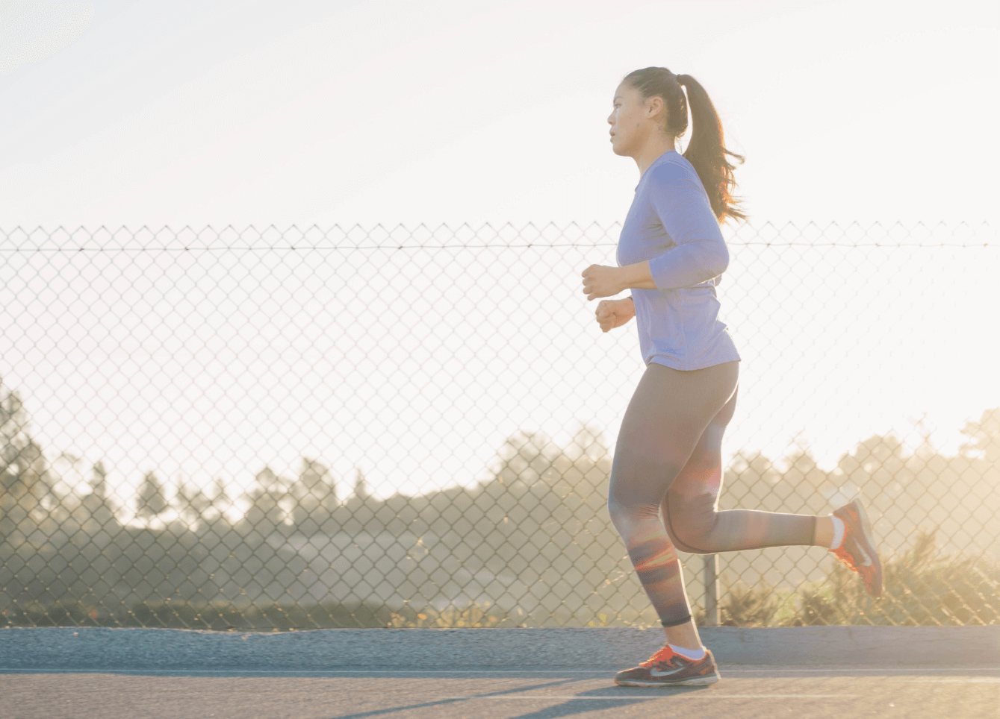
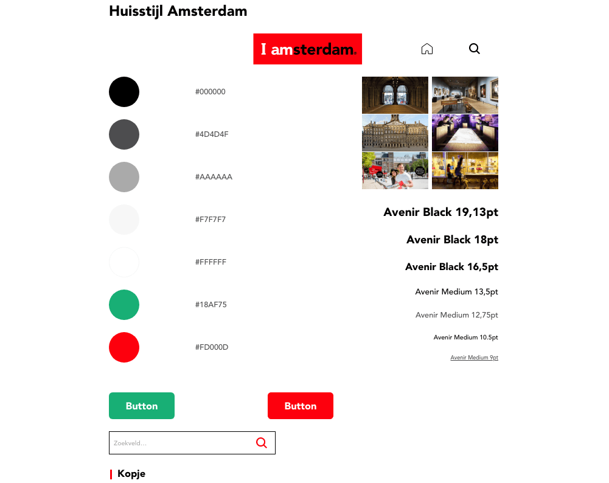
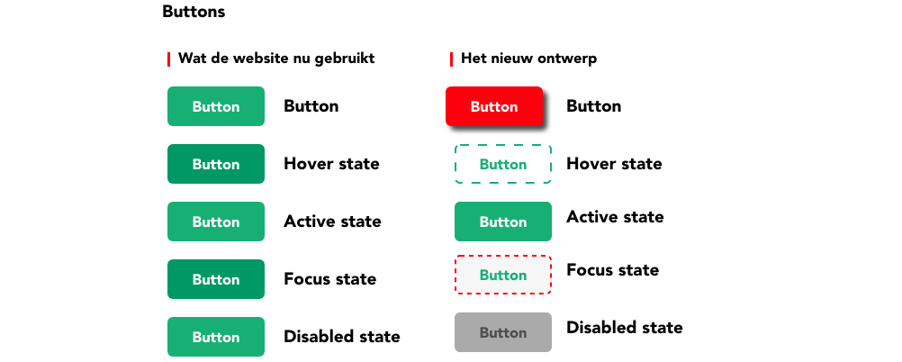
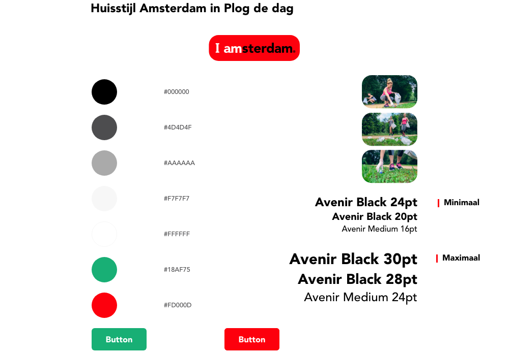

Plog de Dag
De opdracht
De opdracht was om een responsive website te ontwerpen voor I amsterdam Plog de Dag. Het moest een ontwerp zijn voor mobiel en desktop.
Ik heb de huisstijl van I amsterdam onderzocht en bepaalde elementen aangepast om het toegankelijker eruit te laten zien voor de gebruiker als die op de website van Plog de Dag komt.
Jaar
2020
Diensten
UX design
UI design
Web design
Mijn rol
Het was een individueel project, waarin ik zelf onderzoek heb gedaan, verschillende schetsen gemaakt, veel feedback gevraagd en aangepast om tot een mooi, duidelijk en toegankelijk ontwerp te komen.
Plog de Dag
Plog de Dag is een campagne van I amsterdam om zoveel mogelijk zwerfafval tijdens een hardlooprondje door de stad te verzamelen.
Met dit evenement willen ze de stad schoonmaken zodat er minder zwerfafval te vinden is. Iedereen mag meedoen, maar de focus ligt vooral op mensen die van hardlopen houden. De deelnemer kan een foto uploaden op de website om aan te geven dat diegene meedoet aan de actie. Hiermee maakt de deelnemer kans op een mooie prijs.
Het proces
Huisstijl Analyse
Als eerste was ik begonnen met een huisstijl analyse van I amsterdam. Met behulp van de huisstijl kon ik een duidelijke basis voor de website ontwerpen. Bepaalde kleuren die ik terug wilde laten komen en de manier van vormgeving.
Buttons
Ik had ook buttons onderzocht, waaruit bleek dat die weinig verschil hadden in de verschillende states. In het ontwerp voor Plog de Dag heb ik dit aangepast, waardoor duidelijk te zien is in welke state de button zich bevindt.
Huisstyle Plog de Dag
Vervolgens had ik een eigen huisstijl voor Plog de Dag ik elkaar gezet. Hierbij had ik rekening gehouden met het doel van de website, namelijk bezoekers aansporen deel te nemen aan de campagne.
